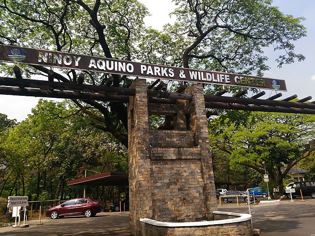
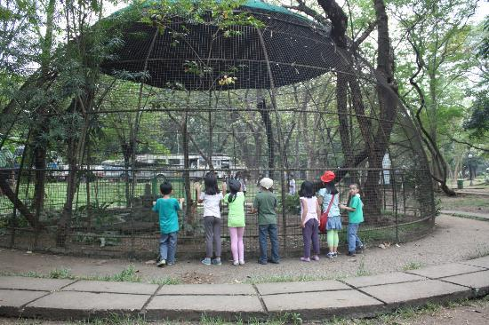

Ninoy Aquino Parks and Wildlife Center
Elliptical Road, Diliman, Quezon City, Philippines

Elliptical Road, Diliman, Quezon City, Philippines
The Ninoy Aquino Parks and Wildlife Center is a 22.7-hectare (56-acre) zoological and botanical garden located in Diliman, Quezon City, the Philippines. It was named after Benigno "Ninoy" Aquino, Jr. The Ninoy Aquino Parks & Wildlife Center has a lagoon, an aquarium, a playground, botanical garden and a Wildlife Rescue Center, which the Department of Environment and Natural Resources uses as a temporary shelter where confiscated, retrieved, donated, sick, abandoned, and injured wild animals are placed to be taken care of. The park houses several indigenous plants and animals such as crab-eating macaques, water monitors, Philippine deer, binturongs, Palawan bearded pigs and several varieties of birds.
The history of the Ninoy Aquino Parks and Wildlife Center (NAPWC) can be traced back to 1954, when the Quezon Memorial Park was established through Proclamation No. 42 issued during the administration of President Ramon Magsaysay. The site of the current NAPWC was included inside this park. The park's area was reduced in 1968 and 1969 with land reallocated for use of the national government and the Philippine Science High School. The NAPWC was opened on July 25, 1970 after it was inaugurated by then-President Ferdinand Marcos. As early as the 1970s, the park also hosted a conventional mini zoo which also served a dual role of depository of wild animals rescued or turned-over to the park by private owners.
Lagoon area: A manmade lagoon is situated within the grounds of the Ninoy Aquino Parks and Wildlife Center which hosts various fishes including catfish, tilapia, and snakehead
Biodiversity museum: A museum, known as the Museum of Philippine Biodiversity, is hosted inside the park. The interactive museum launched in May 2017 features six protected areas featuring both terrestrial and marine ecosystems.
Wildlife and research center: The NAPWC hosts the National Wildlife Rescue and Research Center (NWRRC)which is officially a wildlife rescue and research center to differentiate its role from a conventional zoo. The facility serves as a quarantine area and rehabilitation center for captured wild animals
Gora 2020. All rights reserved